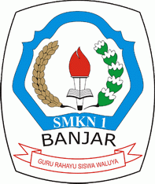
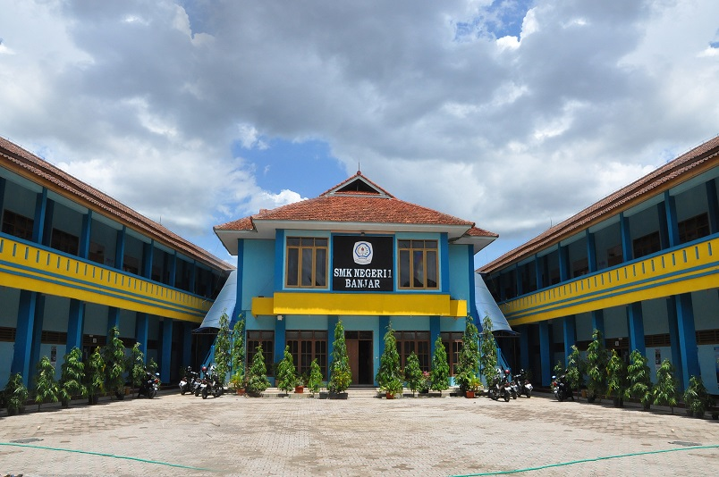

SMKN 1 Banjar adalah sekolah menengah kejuruan negeri pertama di Kota Banjar, Jawa Barat, yang berakreditasi A. Sekolah ini berfokus menghasilkan tenaga kerja terampil di berbagai bidang keahlian, seperti Akuntansi, Perkantoran, Bisnis, Multimedia, RPL, DKV, dan Tata Busana, dengan visi religius, wirausaha, dan berwawasan lingkungan.
